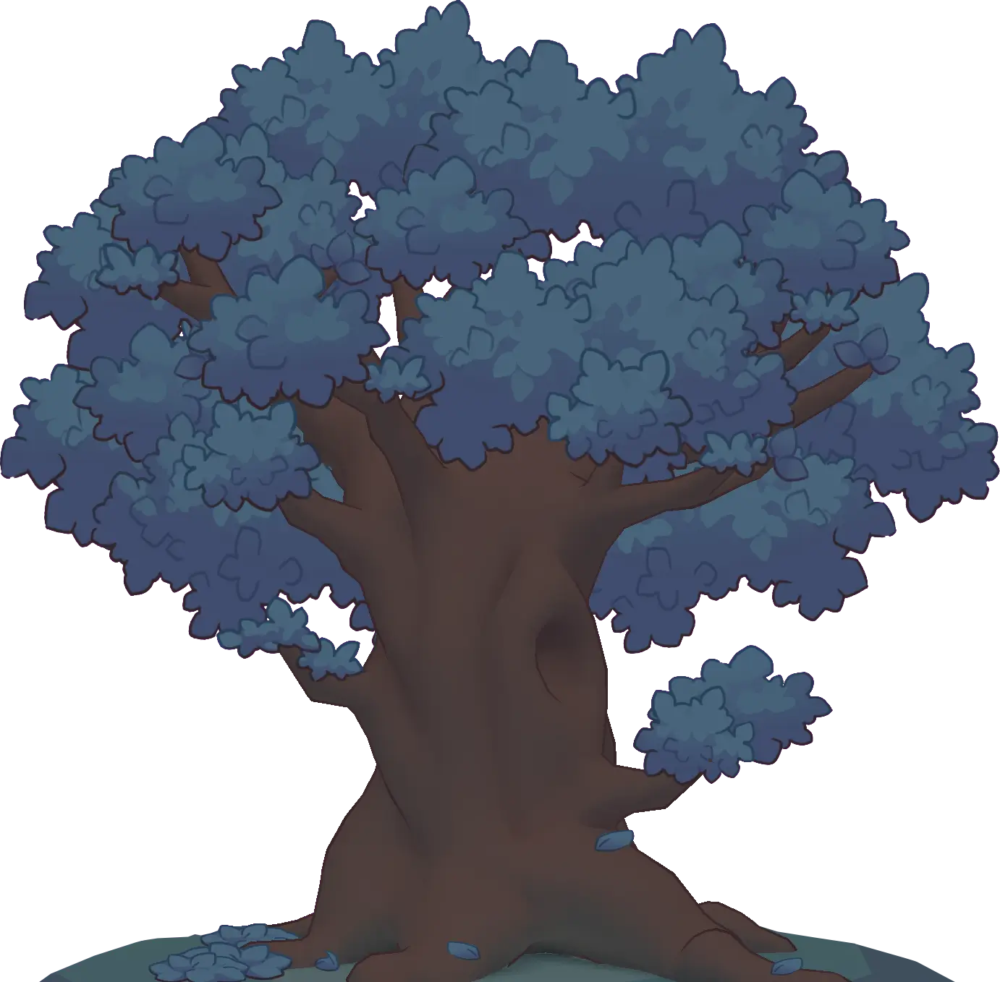

{{ t.pickLanguage }}
{{ t.heroTag }}
{{ t.originQuote }}
{{ t.originNote }}
{{ t.beat1 }}
{{ t.beat2 }}
{{ t.beat3 }}
{{ t.s3Main }}
{{ t.inter1 }}
{{ t.s4Main }}
{{ t.inter2 }}
{{ t.guitarMain }}

{{ t.trailerMain }}